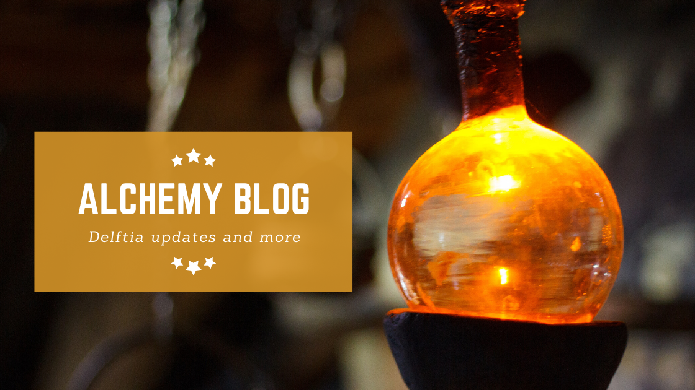
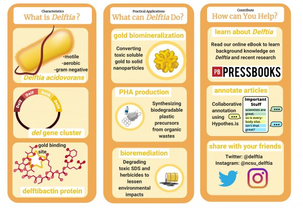

News & Updates
Stay up to date with the latest projects, student research, and community events from the Delftia Project.
The Delftia Project: Engaging Citizen Scientists
Authors: Lauren Ramilo, Daiza Norman, Rabeya Tahir, Tanasha Lertjanyarak, Carlos Goller
Presented at the 2021 Mid-Atlantic SENCER Conference. This presentation explored collaborative annotation practices and how citizen scientists can participate in meaningful research. Collaborative annotation enables groups to annotate electronic materials together while making those annotations visible to all participants.
Conference Citizen Science
Meet the Researcher: Rabeya Tahir
Rabeya Tahir is a new addition to the Delftia team, helping with the WikiEdu course and producing graphics focused on bioremediation and electronic waste recycling. She is from Long Island, New York, and brings valuable expertise to our research efforts.
Team Spotlight WikiEDU
Delftia WikiEDU
WikiEDU is a nonprofit organization that incorporates Wikipedia into education. From August to November 2020, 17 undergraduate volunteers enrolled in the Delftia WikiEDU class. Our goal was to improve the accessibility of Delftia research, improving information equity and catalyzing future research. Students prepared for Wikipedia editing through virtual lessons and reference collection.
Education Wikipedia Undergrad Research
Pathogen Case Study
Examining Delftia as a pathogen through collaborative annotation. Our team analyzed key case studies about Delftia acidovorans infections. Check out our Hypothes.is group for detailed annotations on Delftia-related literature.
Pathogen Research Hypothes.is
Literature Findings: Delftia as a Pathogen
Our community of annotators found important information on infections involving Delftia acidovorans. Join us on Hypothes.is to see the full annotations and findings.
Disclaimer: This information should not be used as medical advice.
Literature Review Citizen Science
#CitSciChat Recap
Lauren Ramilo, one of our undergraduate researchers, hosted a #CitSciChat on Twitter. These events use a Q&A-style format to drive fast-paced conversations about citizen science. Lauren’s chat explored a new corner of citizen science where participants do hands-on research about microbes and biotechnology.
Social Media Citizen Science
Meet the Researcher: Daiza Norman
Daiza Norman is a Biotechnology Research Assistant at the BIT program and a biological science major with a concentration in molecular, cellular, and developmental biology. She has worked on many Delftia-related projects with the BIT program, including the “Where’s Delftia?” project.
Team Spotlight BIT Program
Annotation Focus: Delftia as a Pathogen
Delftia has attracted interest in biotechnology due to its ability to recover gold from solution, but it has also raised concerns in medicine. Although it is a rare opportunistic pathogen, it can be hard to identify and effectively treat. Join our annotations to explore the scientific literature on this topic.
Annotation Medicine
Delftia and E-Waste: Literature Findings
Our community of annotators took on an interesting challenge: exploring how Delftia and its ability to biomineralize gold could be applied to recover gold from e-waste. Discover what our volunteer annotators found about improving e-waste recycling.
E-Waste Bioremediation Gold Recovery
Presenting Delftia at the Sidewalk Symposium
Members of our research team had the opportunity to present current research at the Sidewalk Symposium. Thanks to the Office of Undergraduate Research, NC State Libraries, and the Crafts Center for sponsoring this event! Students created visual representations of their research.
Outreach Student Presentations
Live Annotation: E-Waste
Join us for live annotation sessions where we delve deeper into Delftia topics and foster our community of annotators. Meet peers, practice reading scientific literature, and learn about e-waste and bioremediation.
Live Event E-Waste
Annotation Focus: Recovering E-Waste
Every year up to 50 million tons of electronics are discarded, with only 12% properly recycled. Current recycling methods are costly and energy-intensive. Explore how Delftia may play a role in improving e-waste recycling and recovery.


E-Waste Sustainability Gold Recovery
Stay Connected
Follow our progress, participate in annotations, or join a research experience. The Delftia Project welcomes newcomers at every level.
Get Involved